OUR RECOMMENDED CooperVision PRODUCTS

Biofinity Energys™
New Biofinity Energys™ the only contact lenses with Digital Zone Optics™ lens design
AT A GLANCE
- Digital Zone Optics™ lens design
- Aquaform® Technology
- Monthly Replacement
When there's no time for tired eyes...
Biofinity Energys™ contact lenses are designed for all-day wear, helping people’s eyes better adapt so they can seamlessly and continuously shift focus between digital devices and offline activities.
Read More+

Clariti™ 1-day (sphere)
The healthier way to whiter, brighter eyes for your nearsighted or farsighted vision.
AT A GLANCE
- Convenient daily replacement schedule
- The healthy advantages of silicone hydrogel lenses
- Nearsighted and farsighted vision correction
- Supports excellent all-day comfort
- UVA and UVB protection*
The Convenience of Daily Disposables, the Health of Silicone Hydrogel
If the convenience of daily disposable contacts appeals to you, clariti™
1 day lenses are an excellent choice—whether you’re new to contact lenses or want to switch from your current hydrogel lenses to the healthy advantages of silicone hydrogel. Silicone hydrogel lenses allow more oxygen to pass through to your corneas than hydrogel lenses. That’s important because it makes the lenses more “breathable” for whiter, brighter eyes and a healthier* lens-wearing experience.
Excellent All-Day Comfort You Can Count On
In addition to the healthy benefits of silicone hydrogel, we also put the focus on comfort. That’s why clariti 1 day lenses feature unique WetLoc™ technology. The WetLoc™ process creates a lens that naturally attracts and binds water molecules to the lens surface, so your eyes can stay moist and comfortable throughout your day.
* Warning: UV-absorbing contact lenses are not substitutes for protective UV-absorbing eyewear, such as UV-absorbing goggles or sunglasses, because they do not completely cover the eye and surrounding area. Patients should continue to use UV-absorbing eyewear as directed.
Read More+

MiSight® 1 day
The cornerstone of a comprehensive myopia management approach, MiSight® 1 day is a daily wear, single use contact lens that has been clinically proven and FDA-approved to slow the progression of myopia (nearsightedness) when initially prescribed for children 8-12 years old.
AT A GLANCE
- Suitable for children as young as 8**
- Easy for children to wear and handle
- Corrects your child’s distance vision
- Helps slow the progression of myopia (gradual prescription changes)*
- A closer look at your child's distance vision
What can you do when your child tells you they’re struggling to see the board at school? Or that things are beginning to look blurrier the further away they get from them? One cause for this blurry distance vision could be myopia. Myopia causes light rays to focus at a point in front of the retina rather than directly on the surface, owing to elongation of the eye. Myopic progression is when prescriptions increase over time, and higher prescriptions have been linked to sight-threatening conditions later in life such as retinal detachment, glaucoma and myopic maculopathy.1
Even children with fairly low prescriptions have a higher risk of glaucoma and retinal detachment compared to non-myopic children, and that risk multiplies as their prescriptions get stronger.2
Eighty-one percent of eye care professionals agree that myopia is one of the biggest problems impacting children’s eyesight today.3 But until now, traditional eyeglasses and contact lenses available in the U.S. have only been developed to correct blurred vision, but they do nothing to help slow gradual prescription increases.
Focusing on your child's vision, now and in the future
Generally, myopia first occurs in school-age children and progresses until about age 20.4 According to the American Optometric Association, 34% of children ages 12-17 are myopic. This is due in part to changing lifestyles, with children spending less time outdoors and more time focusing on close objects like digital screens.
With FDA approval of MiSight® 1 day, CooperVision will empower eye care professionals and parents to take on pediatric myopia’s* growing prevalence and severity with a proven approach scientifically designed for the challenge.
*Indications for use.Indications for Use: MiSight® (omafilcon A) daily wear single use Soft Contact Lenses are indicated for the correction of myopic ametropia and for slowing the progression of myopia in children with non-diseased eyes, who at the initiation of treatment are 8-12 years of age and have a refraction of -0.75 to -4.00 diopters (spherical equivalent) with ≤ 0.75 diopters of astigmatism. The lens is to be discarded after each removal.
**Based on a clinical study in which participants were between the ages of 8 and 12 at initial fit.
1. Xu L, et al. High myopia and Glaucoma susceptibility for the Beijing Eye Study. Ophthalmology. 2007;114(2):216-20. 2. Bourne RR, et al. Causes of vision loss worldwide, 1990-2010: a systemic analysis. Lancet Glob Health. 2013;1(6):e339-49. 3. CooperVision data on file 2019. Myopia Awareness, The Harris Poll online survey 6/27/19 to 7/18/19 of n=313 ECPs (who see at least 1/month myopic child, age 8-15) in U.S. 4. Yu L, et al. Epidemiology, genetics and treatments for myopia. Int J Ophthalmol. 2011;4(6):658-69.
Read More+
OUR CooperVision PRODUCTS
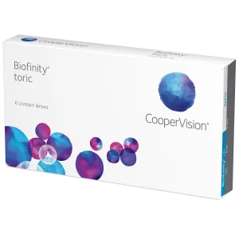
Biofinity® Toric
Get the best of both worlds: Superior vision and a more comfortable lens-wearing experience.
AT A GLANCE
- Monthly replacement
- Designed for stability, clarity and comfort
- Natural wettability for incredible, long-lasting comfort and clarity
- Highly breathable for clear, white, and healthier eyes
- Extended range of lenses available to correct higher degrees of astigmatism along with nearsightedness or farsightedness
Read More+
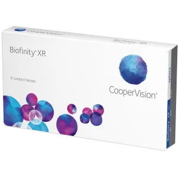
Biofinity® XR
Have an extreme prescription? Thought you couldn't wear contacts?
AT A GLANCE
- Monthly replacement
- Lenses stay moist and comfortable
- Naturally wettable so you're less likely to need additional wetting drops
Extended Range May Be the Answer
Are you nearsighted or farsighted to such a degree that vision correction with contact lenses has been difficult to find? If so, CooperVision Biofinity® XR (extended range) sphere lenses may be the answer.
Biofinity XR lenses are designed for extreme prescriptions like yours. And they offer the same superior comfort and vision performance of Biofinity sphere contacts for up to six nights and seven days of continuous wear.
A Healthier Lens-Wearing Experience
Thanks to our exclusive Aquaform® Technology, Biofinity XR lenses allow plenty of oxygen to pass through to your eyes. And their natural wettability won’t rinse off. You’ll enjoy excellent vision with a soft, comfortable lens that’s healthier for your eyes.
Read More+
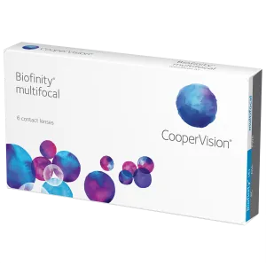
Biofinity® Multifocal
Over 40? Meet your premium multifocal contact lenses.
AT A GLANCE
- Monthly replacement
- Focus close up, far away and in-between
- Lenses stay moist and comfortable
Naturally wettable so you're less likely to need additional wetting drops
Focus Up Close, Far Away and In-Between
Once we reach age 40 to 45, our eyes lose the ability to focus on objects that are up close—especially in low-light situations, such as reading a menu in a restaurant. This condition is called “presbyopia” and it affects everyone.
With Balanced Progressive™ Technology, CooperVision Biofinity®multifocal contacts allow you to see near and far objects, along with everything in-between—all with the clarity and comfort you deserve. And you’re free to wear these lenses for up to 7 days in a row.
A Healthier Lens-Wearing Experience
Thanks to our exclusive Aquaform® Technology, Biofinity multifocal lenses allow plenty of oxygen to pass through to your eyes. And their natural wettability won’t rinse off. You’ll enjoy excellent vision with a soft, comfortable lens that’s healthier for your eyes.
Read More+
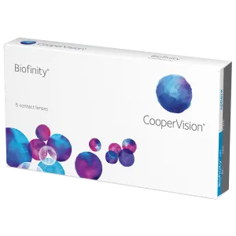
Biofinity®
Premium soft contact lenses. Luxurious extended-wear comfort.
AT A GLANCE
- Monthly replacement
- Lenses stay moist and comfortable
- Naturally wettable so you're less likely to need additional wetting drops
Up to 6 Nights/7 Days of Continuous Wear
You need your nearsighted or farsighted vision corrected. You also demand contacts with comfort that lasts all day—starting with your first morning cup to going out with friends until midnight.
Meet CooperVision Biofinity®, the silicone hydrogel contact lenses that won’t slow down your busy days. Biofinity lenses offer you the premium level of comfort that you’re searching for. And you’re free to wear them for up to 7 days in a row.
A Healthier Lens-Wearing Experience
Thanks to our exclusive Aquaform® Technology, Biofinity lenses allow plenty of oxygen to pass through to your eyes. And their natural wettability won’t rinse off. You’ll enjoy excellent vision with a soft, comfortable lens that’s healthier for your eyes.
Read More+
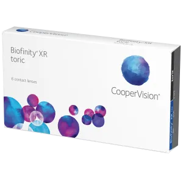
Biofinity® XR Toric
CooperVision Biofinity® XR toric lenses help correct the blurry effects of astigmatism for wearers who have had trouble wearing contacts in the past due to high prescriptions.
Key features include:
- Monthly disposable
- Extended range for near/farsighted correction
- Aquaform Technology (for moisture and oxygen flow)
Read More+
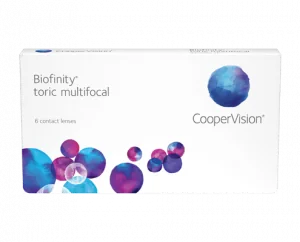
Biofinity® Toric Multifocals
- Same toric design as the most prescribed toric lens on the market, Biofinity® toric1
- Predictable, consistent visual acuity and lens stability
- Uniform horizontal ISO thickness and wide ballast band quickly orient the lens for better performance, clear vision and a stable fit
- Balanced Progressive® Technology allows for remarkable vision performance at all distances, the same design as Biofinity® multifocal
Read More+
Clariti™ 1-day Toric
Correct your astigmatism the healthier way with silicone hydrogel, daily disposable lenses.
AT A GLANCE
- Ease and convenience
- Whiter, brighter eyes
- Vision correction for astigmatism
- Amazing affordability
- Moisture means comfort
- UV protection**
Oh, happy day.
Winner of the Contact Lens Product of the Year at the 2012 Optician Awards, clariti® 1 day toric contact lenses let you enjoy all the convenience of a daily disposable and the healthier* advantages of silicone hydrogel in one lens.
Silicone hydrogel lenses allow more oxygen to pass through to your corneas than hydrogel lenses. That’s important because it makes the lenses more “breathable” for whiter, brighter2 eyes and a healthier lens-wearing experience.
Enhanced all-day comfort you can count on
In addition to the healthier benefits of silicone hydrogel, we also put the focus on comfort. That’s why clariti 1 day toric lenses are naturally hydrating, for enhanced, all-day comfort.
Talk to your eye care professional about the advantages and daily convenience of clariti 1 day toric contact lenses.
** Warning: UV-absorbing contact lenses are not substitutes for protective UV-absorbing eyewear, such as UV-absorbing goggles or sunglasses, because they do not completely cover the eye and surrounding area. Patients should continue to use UV-absorbing eyewear as directed.
Read More+
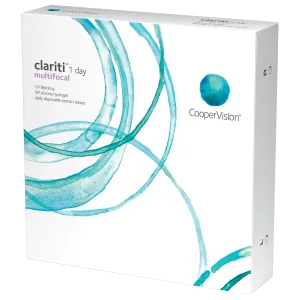
Clariti™ 1-day Multifocal
Correct your presbyopia the healthier way with silicone hydrogel, daily disposable lenses.
AT A GLANCE
- Ease and convenience
- Whiter, brighter eyes
- Vision correction for presbyopia—focus close up, far away and in-between
- Amazing affordability
- Moisture means comfort
- UV protection**
Oh, happy day.
clariti® 1 day multifocal contact lenses from CooperVision® lets you enjoy all the convenience of a daily disposable and the healthier advantages of silicone hydrogel in one lens.
Silicone hydrogel lenses allow more oxygen to pass through to your corneas than hydrogel lenses. That’s important—it makes the lenses more “breathable” for whiter, brighter1 eyes and a healthier* lens-wearing experience.
Enhanced, all-day comfort you can count on.
In addition to the healthier benefits of silicone hydrogel, we also put the focus on comfort. That’s why clariti 1 day multifocal lenses are naturally hydrating, for enhanced, all-day comfort.
**Warning: UV-absorbing contact lenses are not substitutes for protective UV-absorbing eyewear, such as UV-absorbing goggles or sunglasses, because they do not completely cover the eye and surrounding area. Patients should continue to use UV-absorbing eyewear as directed.
Read More+
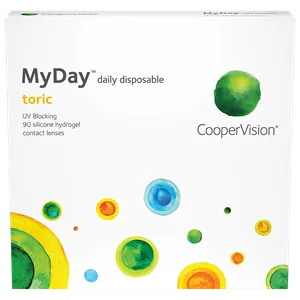
MyDay® toric
Features
- Biofinity® toric optical design features in a 1-day lens
- 3rd generation silicone hydrogel material for a high performing, comfortable lens
- Up to 4x Dk/t of a hydrogel 1-day lens for higher oxygen transmissibility
- Our highest UVA/UVB* blockers
Benefits of Biofinity® toric replicated in a 1-day lens.
Proven toric lens design, with the same optical design features found in Biofinity toric.
MyDay toric features Optimized Toric Lens Geometry™, resulting in a toric lens designed to provide predictable, consistent visual acuity, superior lens stability, fit and comfort.1
Uncompromised chemistry.
MyDay daily disposable lenses also feature Aquaform® Technology, which provides a unique balance of high oxygen permeability, high water content and optimum modulus for a soft and flexible lens. These features deliver the unsurpassed comfort, softness, and superb handling that patients love.2
Read More+
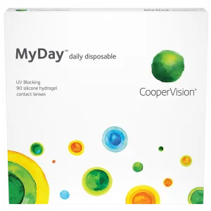
MyDay®
Your eyes are working all day. Shouldn’t your daily disposable lenses, too?
AT A GLANCE
- Convenient daily replacement schedule
- The healthy advantages of silicone hydrogel lenses
- Vision correction for nearsightedness and farsightedness
- Supports excellent all-day comfort
- UVA and UVB protection*
Your eyes are working all day. Shouldn’t your daily disposable lenses, too?
We think so. That’s why we designed CooperVision®MyDay® to provide everything you need for an exceptional overall daily disposable experience: uncompromised comfort, easy lens insertion and removal, and a highly breathable lens that helps provides a healthier lens wearing experience. That’s MyDay—lenses you’ll put in and forget about until you’re ready to call it a day.
Simply Smarter Chemistry: MyDay® Smart Silicone™
Thanks to Smart Silicone™, a revolutionary breakthrough in lens chemistry, MyDay provides uncompromised comfort throughout your day. Here’s how it works. Smart Silicone delivers oxygen to your eyes much more efficiently than other daily disposable brands, while using less silicone. That’s important because less silicone allows more room in the lens for built-in channels of moisture and a naturally water-loving lens material that keeps your eyes feeling moist. Less silicone also makes the MyDay lens wonderfully soft—softer than other silicone hydrogel, daily disposable lenses—yet they’re easy to insert and remove.
*Warning: UV-absorbing contact lenses are not substitutes for protective UV-absorbing eyewear, such as UV-absorbing goggles or sunglasses, because they do not completely cover the eye and surrounding area. Patients should continue to use UV-absorbing eyewear as directed.
Read More+
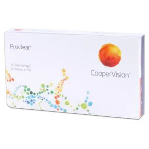
Proclear® sphere
Monthly contacts for nearsighted or farsighted vision.
AT A GLANCE
- Monthly replacement schedule
- Provide clear vision, exceptional comfort
- Stay 96% hydrated throughout the day
- May help address eye dryness when wearing contact lenses
Help Keep Eyes Moist and Comfortable
When it comes to correcting blurry nearsighted or farsighted vision, all contact lenses are the same, right? Not so!
Unlike some lenses that may have your eyes feeling itchy and dry after you’ve worn them only a short time, CooperVision Proclear® sphere contacts go the distance—helping the lenses stay moist and comfortable throughout your day.
Naturally Resist Dryness
Thanks to our PC Technology™, water molecules actually become a part of the Proclear sphere contact lens, creating a natural resistance to dryness.
In fact, Proclear contacts are the only contact lenses cleared by the U.S. FDA for the claim: "may provide improved comfort for contact lens wearers who experience mild discomfort or symptoms relating to dryness during lens wear."
Read More+
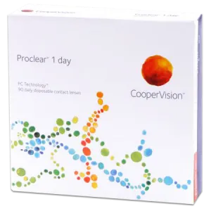
Proclear® 1 day
The performance of a hydrogel. The benefits of a daily.
AT A GLANCE
- Stay 96% hydrated throughout the day, even after 12 hours of wear
- Maintain oxygen flow to help keep your eyes clear and white
- May help address eye dryness when wearing contact lenses
Correct Nearsighted or Farsighted Vision
Do you find you have gritty, red eyes when wearing contacts? Changing your contact lenses often may help you get rid of proteins and allergens before they have time to build up on your lenses.
Give your eyes what they’re asking for by providing them with a fresh, new pair of CooperVision Proclear® 1 day contacts every day. They’ll thank you.
Naturally Resist Dryness
Thanks to our PC Technology™, water molecules actually become a part of the Proclear 1 day contact lens, creating a natural resistance to dryness.
In fact, Proclear contacts are the only contact lenses cleared by the U.S. FDA for the claim: "may provide improved comfort for contact lens wearers who experience mild discomfort or symptoms relating to dryness during lens wear."
Read More+
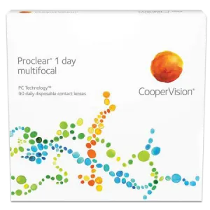
Proclear® 1 day multifocal
Over 40? Get the clarity you need with the comfort of daily disposables.
AT A GLANCE
- Stay 96% hydrated throughout the day, even after 12 hours of wear
- Provide clear vision at all distances
- May help address eye dryness when wearing contact lenses
Focus Up Close, Far Away and In-Between
If you’re age of 40 to 45, you may have noticed that your vision is blurry when looking at objects up close. This condition is called “presbyopia” and it affects everyone.
With CooperVision Proclear® 1 day multifocal contact lenses, you can now enjoy the clear vision you need, whether you’re reading an email on your phone, working on your PC, or trying to read a billboard in the distance.
And since these are daily contact lenses, you’ll also have a fresh, new pair every day—definitely a bonus if you have itchy eyes with contacts due to allergies.
Naturally Resist Dryness
Thanks to our PC Technology™, water molecules actually become a part of the Proclear 1 day multifocal lens, creating a natural resistance to dryness.
In fact, Proclear contacts are the only contact lenses cleared by the U.S. FDA for the claim: "may provide improved comfort for contact lens wearers who experience mild discomfort or symptoms relating to dryness during lens wear."
Read More+
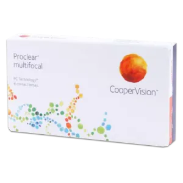
Proclear® multifocal
Over 40? Get the clarity you need with the comfort of daily disposables.
AT A GLANCE
- Stay 96% hydrated throughout the day, even after 12 hours of wear
- Provide clear vision at all distances
- May help address eye dryness when wearing contact lenses
40-Somethings: Say No to Bifocal Glasses
Between the ages of 40 and 45, our eyes lose the ability to focus on objects up close. It’s called “presbyopia” and it’s a part of the natural aging process. That doesn’t mean you have to settle for wearing your grandmother’s bifocal eyeglasses, though.
Enjoy the comfort and freedom of CooperVision Proclear®multifocal contacts instead. With these soft, flexible lenses, you’ll have clear vision—whether you're texting on your phone, working on your computer, or looking for the right street sign that’s around here… somewhere.
Naturally Resist Dryness
Thanks to our PC Technology™, water molecules actually become a part of the Proclear multifocal contact lens, creating a natural resistance to dryness.
In fact, Proclear contacts are the only contact lenses cleared by the U.S. FDA for the claim: "may provide improved comfort for contact lens wearers who experience mild discomfort or symptoms relating to dryness during lens wear."
Read More+
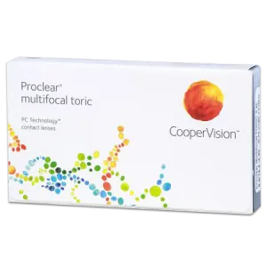
Proclear® multifocal toric
Soak in the comfort with our multifocal contact lenses for astigmatism.
AT A GLANCE
- Monthly replacement schedule
- Correct astigmatism and presbyopia
- Stay 96% hydrated throughout the day, even after 12 hours of wear
- May help address eye dryness when wearing contact lenses
Dual Correction for Clear Vision
If you have astigmatism, you may experience blurry or distorted vision. This can happen at any age.
But somewhere between the ages of 40 to 45, everyone’s vision blurs on objects that are close up, like a book or menu. This eye condition is called “presbyopia,” and it’s part of our eyes’ normal aging process.
To clear up both conditions, you need lenses that correct your vision at any distance, like our Proclear® multifocal toric contacts. They deliver clear vision whether you’re reading the newspaper or a sign in the distance.
Naturally Resist Dryness
Thanks to our PC Technology™, water molecules actually become a part of the Proclear multifocal toric contact lens, creating a natural resistance to dryness.
In fact, Proclear contacts are the only contact lenses cleared by the U.S. FDA for the claim: "may provide improved comfort for contact lens wearers who experience mild discomfort or symptoms relating to dryness during lens wear."
Read More+
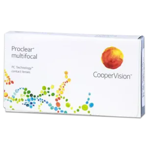
Proclear® multifocal XR
- Provides excellent stereopisis and visual acuity at all ranges
- Extensive parameter range, including seven Add Powers
- May address discomfort from dry eyes
Balanced Progressive™ Technology
CooperVision Proclear® multifocal contact lenses have a proven track record of providing outstanding vision, health and comfort. And the Proclear multifocal lens-fitting system offers you more control and flexibility when fitting presbyopic patients. Featuring Balanced Progressive™ Technology, Proclear multifocal lenses combine spherical and aspheric optics and unique zone sizes to produce a "D" lens for the dominant eye and an "N" lens for the non-dominant eye. These two lens designs work together to maximize binocular visual acuity at all distances—near, intermediate and far.
Patented PC Technology™
Proclear multifocal lenses are made using our exclusive PC Technology™ manufacturing process. PC Technology leads to a more comfortable lens-wearing experience—especially important to presbyopic patients whose eyes often grow drier due to age. In fact, Proclear lenses are the only multifocal lenses cleared by the FDA for the claim: "may provide improved comfort for contact lens wearers who experience mild discomfort or symptoms relating to dryness during lens wear."
Read More+
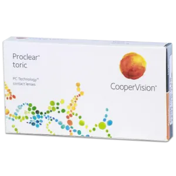
Proclear® toric XR
Features
- Soft, low modulus
- Risk-free fitting guarantee
- Extended range options
- May address discomfort from dry eyes
Over 45,000 Parameters Available
CooperVision® Proclear® toric has a proven track record of providing outstanding vision health and comfort. Proclear toric lenses feature a soft, low modulus that helps reduce the risk of adverse effects on the cornea. And they were designed to remain hydrated, helping them feel moist and comfortable all day long. With over 45,000 parameters available, Proclear toric contact lenses also enable you to fit more of your astigmatic patients precisely. And our “It’s Okay” Guarantee means you can fit your patients risk free.
Patented PC Technology™ Makes It Work
CooperVision’s exclusive PC Technology™ creates a unique lens material in which the phosphorylcholine (PC) molecules attract and bind water to the surface, creating a shield that keeps the lenses clean and functioning properly. The PC molecules also help the lenses remain hydrated, which in turn, help them feel moist and comfortable all day long.
Read More+